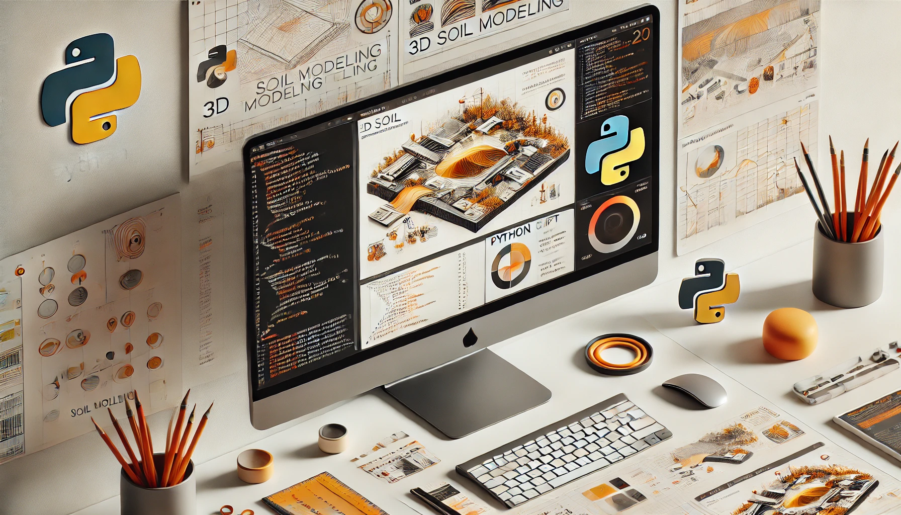

RSPile Scripting Reference Manual#
Version: 3.31.0
Prerequisites#
Before you begin, ensure you have the RSPile program installed. You must have at minimum Version 3.031 in order to use this feature.
Python Environment#
There are two methods to run a script, which differ in the Python environment used:
- Running on RocScript Editor
Comes pre-installed with RSPile and includes the RSPile Python API library
For all-level users
- Running on your own Python environment
Requires downloading the RSPile Python API library
For advanced users
Please refer to Getting Started with RSPile Python Scripting for more information.
Install RSPile Python API Library#
pip installation
pip install RSPileScripting
If you are not using the latest release of RSPile, you need to specify a library version that matches your RSPile version. For example:
pip install "RSPileScripting==3.31.0"
RSPile Scripting Tutorials#
Please visit RSPile tutorial website for more detailed tutorials.

Table of Contents#
- RSPileScripting
- Python Script Examples
- Model Script Example
- Modeler Script Example
- Soil Properties: Basic Example
- Axial Soil Properties (Pile Analysis)
- Lateral Soil Properties (Pile Analysis)
- Driven Soil Properties
- Bored Soil Properties
- Helical Soil Properties
- Pile Sections (Pile Analysis)
- Pile Sections (Driven)
- Pile Sections (Bored)
- Pile Sections (Helical)
- Prestressed Concrete Section (Pile Analysis)
- Pile Types (Pile Analysis)
- Pile Types (Driven)
- Pile Types (Bored)
- Pile Types (Helical)
- Results Analysis (Pile Analysis)
- C-Phi Sensitivity Analysis Example (Pile Analysis)